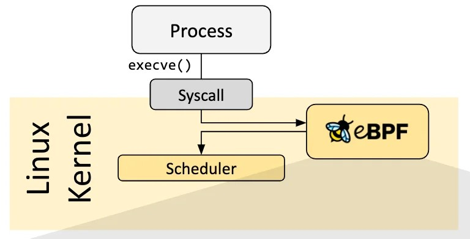
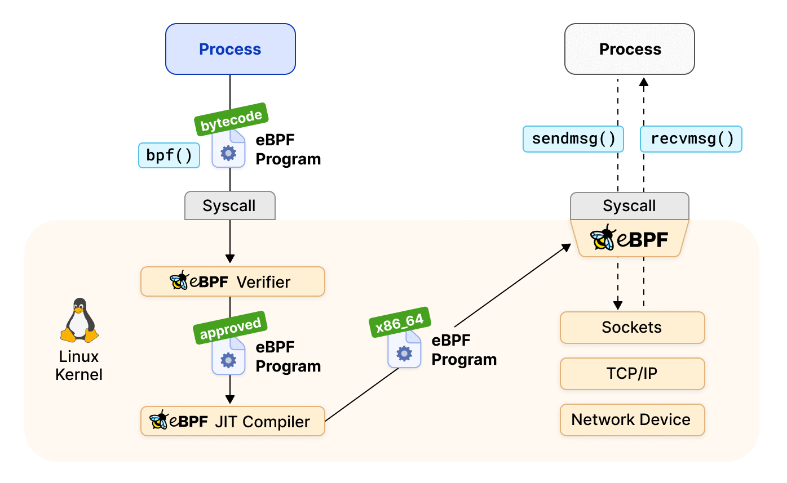
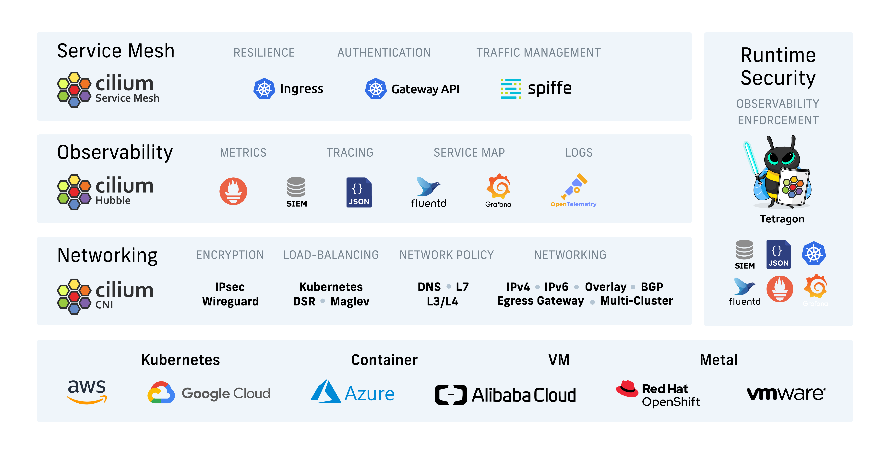
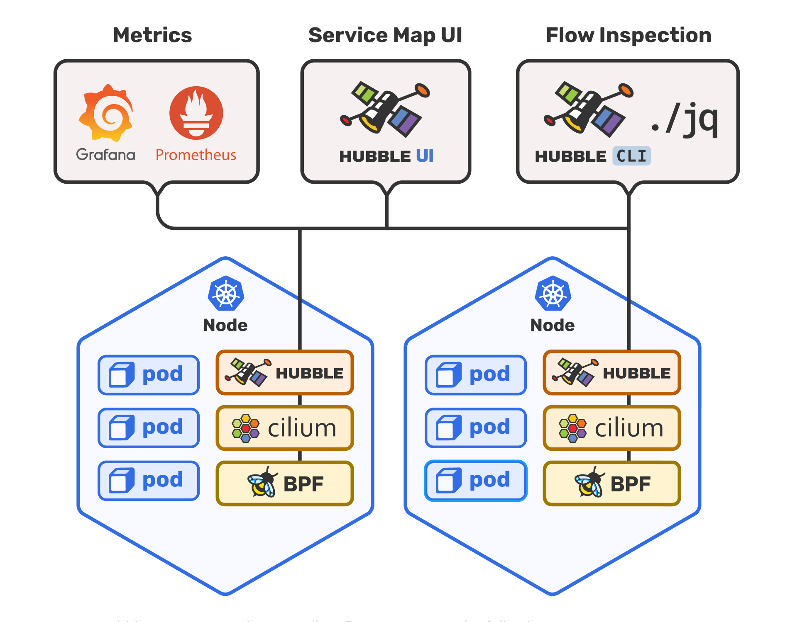
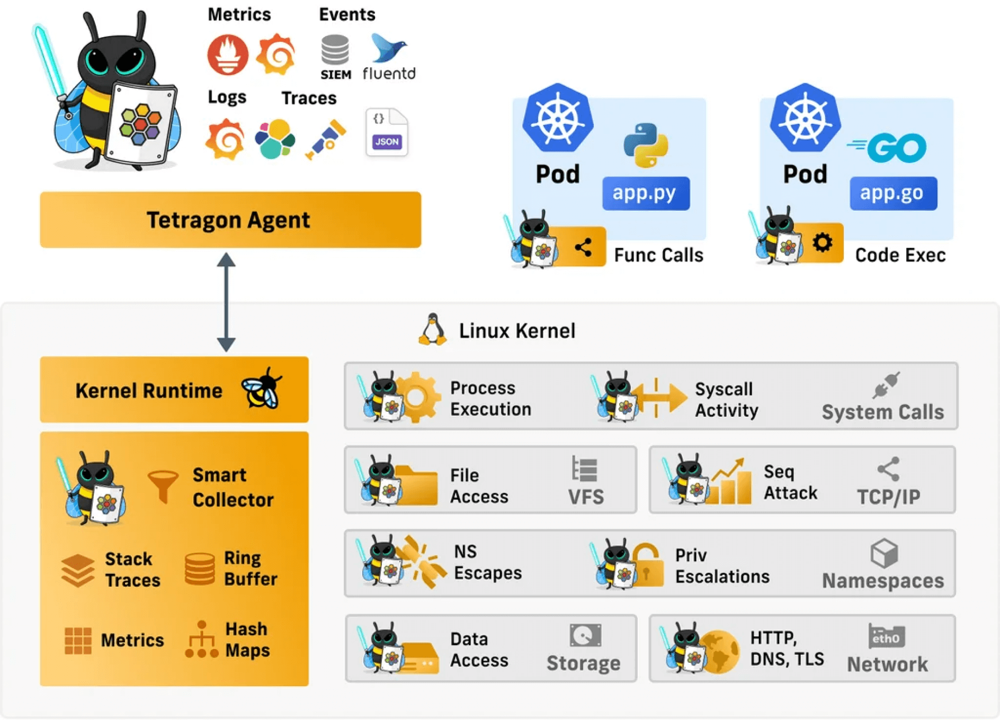

What is a Kernel?
The system that manages the resources of the computer, and provides an interface between software and hardware.
Process and Kernel Comunicatoin
User Space
User Space
⬇️
Kernel Space
User Space
⬇️
System Calls
⬇️
Kernel Space
BPF
Berkeley Packet Filter
Into the Kernel Space
@adawolfs
Brilliant, but lazy.
eBPF is a kernel technology that allows to dynamically extend the functionalities of the kernel at runtime.
eBPF was originally created by engineers from Facebook (Meta) and Isovalent.
When a new process is created, a new call to execve syscall is done, which normally results in scheduling the new process execution in the kernel.
eBPF can attach a program to kernel events and use it to act upon them, for example for observability.
eBPF Hook
Syscall Hook
Since August 2021, the eBPF Foundation has been fostering the development of the technology and its community.

Questions?
With great power
there must also come great responsibility
Privileges
Only processes with root rights or with CAP_BPF capability can load eBPF programs into the Kernel
Verification and JIT Compilation
Programs are verified when they are injected into the kernel, they should not block, loop forever, or access memory outside of the stack.
How is eBPF related to Cloud Native?
Enhanced Security and Observavility Tooling
Extensability without Kernel Updates
Container and Kubernetes awareness into the Kernel
eBPF Projects
tcpdump
THE packet analyzer.
Cilium
Networking, Security, and Observability Solution
Cilium Hubble
Network, Service & Security Observability for Kubernetes
Cilium Tetragon
Realtime Security Observability & Runtime Enforcement
eBPF
extendedBPF
No son siglas